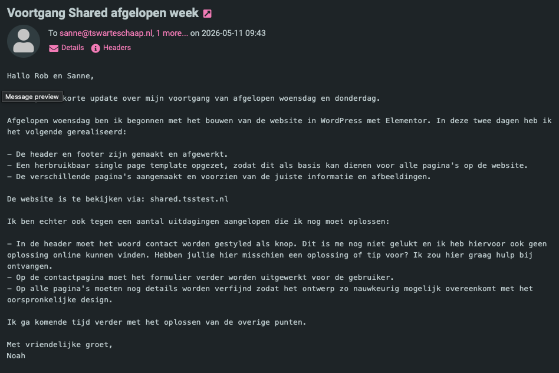
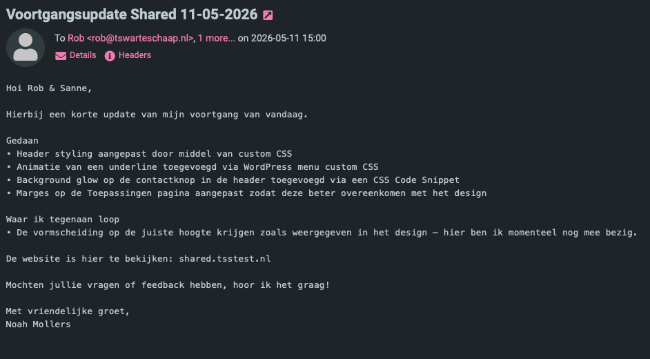
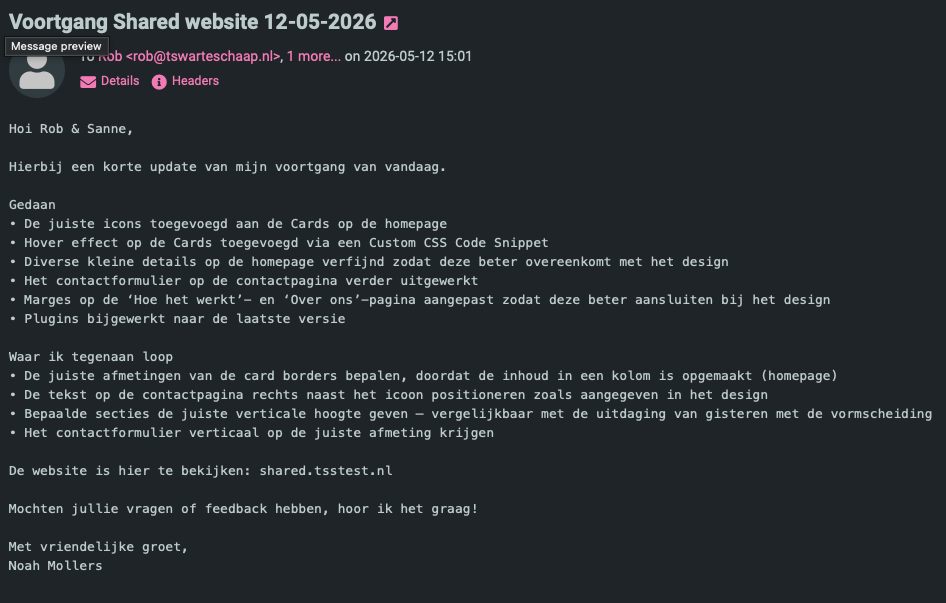
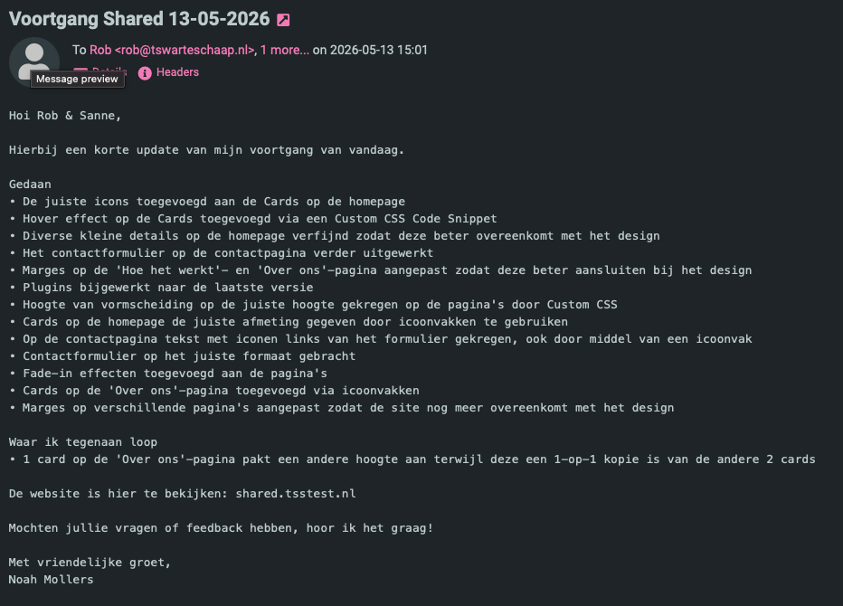

Tijdens mijn stage heb ik actief deelgenomen aan overlegmomenten met mijn stagebegeleider. Deze overleggen zijn vastgelegd in de vorm van een debriefing, waarin de besproken onderwerpen, gemaakte afspraken, actiepunten en mijn eigen bijdrage zijn gedocumenteerd.
In deze debriefing is een overleg uitgewerkt met mijn stagebegeleider over de marketingaanpak van de shared screens. Tijdens dit overleg heb ik actief deelgenomen door vragen te stellen en verbeterideeën in te brengen.
Tijdens het gesprek heb ik voorgesteld om de verschillende toepassingen van de schermen duidelijker op de website te presenteren door middel van use-cases. Hierdoor wordt het voor bezoekers direct duidelijk wat er mogelijk is.
Daarnaast heb ik vragen gesteld over:
Deze input heeft geleid tot concrete actiepunten, zoals het duidelijker presenteren van toepassingen, het benadrukken van video en het zichtbaar maken van de touchscreen functionaliteit op de website.
Te zien dat ik mijn stagebegeleider actief op de hoogte hou over de voortgang.




Hieronder is de volledige debriefing direct leesbaar: